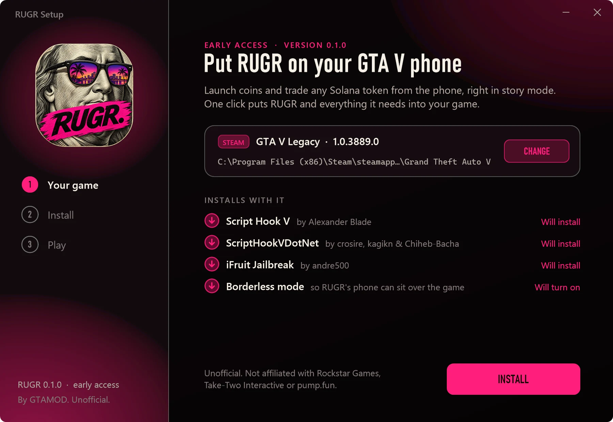
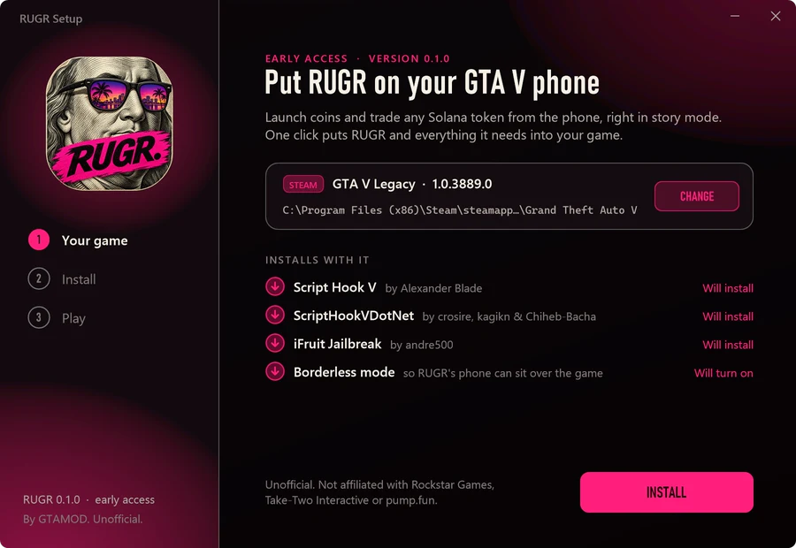
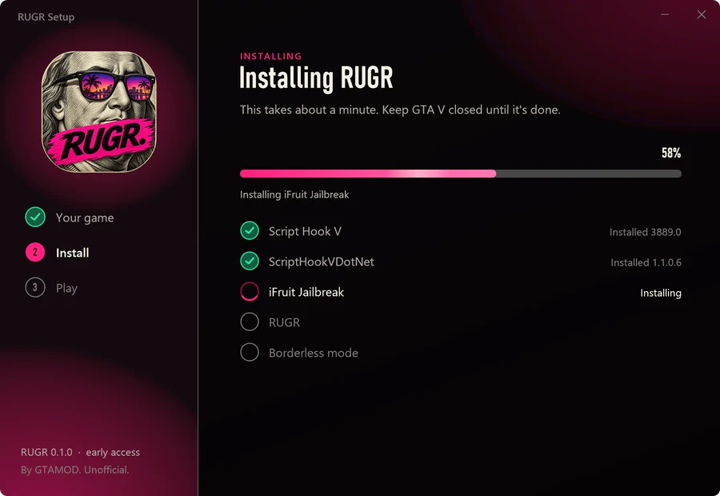
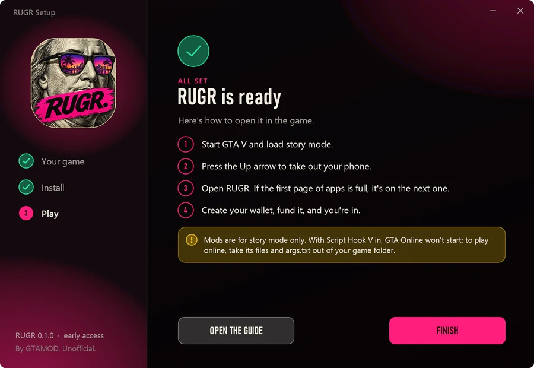
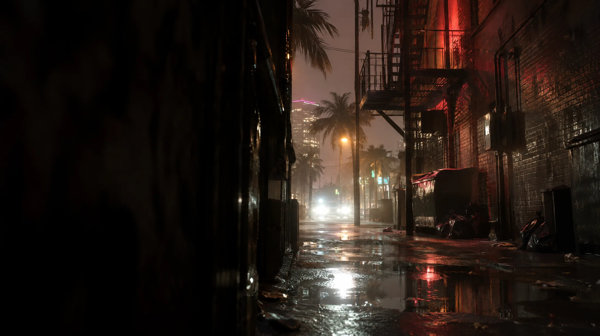
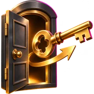

Early access
Download RUGR.
One click puts RUGR and every mod it needs on your phone in GTA V. Launch coins and trade any Solana token without leaving story mode.
SHA-256 5880c822…b937837b
You're on a phone. RUGR installs on a Windows PC that has GTA V.


What's in the box
You bring the game. Setup does the rest.
RUGR runs on three free mods. RUGR Setup installs all of them for you, each from its maker, and leaves alone anything you already have.
-
01
GTA V on PC
From Steam, Epic Games or the Rockstar Games Launcher, played in story mode. The only thing you need. Tested on GTA V Legacy.
-
02
dev-c.com
Script Hook V
Lets mods run inside the game. Setup downloads the latest from its maker's site while it installs.
-
03
GitHub
ScriptHookVDotNet
Runs mods written in C#, like RUGR. Setup gets the Enhanced build from GitHub, which works on both editions.
-
04
gta5-mods.com
iFruit Jailbreak
Adds apps to the phone's home screen. Version 6.0 comes inside RUGR Setup.
-
05
The finishing touches
Setup switches the game from fullscreen to borderless, so RUGR's phone can sit over it. If your PC lacks Microsoft's Visual C++ runtime or WebView2, it adds those too.
Install
One click. About a minute.
RUGR Setup finds your game, installs RUGR and every mod it needs, and checks every file it wrote.
-

01Run RUGR Setup
Open
RUGR-Setup-0.1.0.exefrom your downloads. If Windows says it protected your PC, press More info, then Run anyway. RUGR Setup isn't signed yet, so Windows doesn't recognise it. It finds GTA V on Steam, Epic Games or the Rockstar Games Launcher by itself. Keep it somewhere else? Press Change. -

02Press Install
That's the only click. Setup gets Script Hook V and ScriptHookVDotNet from their makers, puts in iFruit Jailbreak and RUGR, and turns on borderless mode. Anything you already have stays as it is. Updating later keeps your settings. If GTA V lives in Program Files, Windows asks for permission first.
-

03Open RUGR in the game
Load story mode, press the ↑ arrow to take out your phone, and open RUGR. If the first page of apps is full, it's on the next one. The first open takes a moment while RUGR starts.

In the game
Your first five minutes.
RUGR starts in Practice, where trades are simulated. When you're ready, switch to Real money in Wallet, Settings.
-
 01
01
Make your wallet
Press Create wallet and pick a password of at least 10 characters. It can't be recovered, so save your key from Wallet, Settings, Export private key.
-
 02
02
Fund it
Wallet, Receive shows your address and a QR code. Send SOL to it from another wallet or an exchange.
-
 03
03
Launch a coin
Create Coin turns a photo from the game's own camera into a coin, with its name, ticker and an optional first buy.
-
 04
04
Trade anything
Swap trades any Solana token. Copy its address anywhere on your PC and press Paste token address.
Phone screens show sample data.

Good to know
Play it safe.
-
Your keys stay on your PC
Your wallet is encrypted with your password and saved in your Windows profile, never in the game folder. RUGR's server never sees it, and removing RUGR leaves it where it is.
-

Story mode only
With Script Hook V in, GTA Online won't start. Before you play online, run RUGR Setup and press Remove RUGR, then take Script Hook V's files,
args.txtand the other mods out of your game folder. -

Real stakes
Most memecoins lose their value, and trades can't be undone. Only put in what you can lose. Nothing here is financial advice.

Help
If it sticks.
Windows says it protected my PC
RUGR Setup isn't signed with a certificate yet, so SmartScreen doesn't recognise it. Press More info, then Run anyway. To be sure the file is ours, compare its SHA-256 with the one at the top of this page.
My antivirus flags RUGR
RUGR's companion packs Node.js into a single program, which some scanners flag on sight. If the file's SHA-256 matches the one on this page, it's the file we published.
Do I need to install anything else?
No. RUGR Setup installs Script Hook V, ScriptHookVDotNet and iFruit Jailbreak, plus Microsoft's Visual C++ runtime and WebView2 if your PC doesn't have them. It needs an internet connection for the parts it downloads.
RUGR isn't on the phone
Look on the phone's next page of apps first. If it's not there, run RUGR Setup again: after a game update, Script Hook V can take a few days to catch up, and Setup gets the new one as soon as it's out.
RUGR's phone doesn't show over the game
RUGR Setup turns on borderless mode once the game has saved its settings. If you installed before ever starting the game, or changed it back, set Settings, Graphics, Screen Type to Borderless. RUGR's phone is its own window, and fullscreen hides it. Without WebView2, RUGR draws on the game's own phone screen instead.
The game asks to install BattlEye
Press Cancel. Setup adds Script Hook V's args.txt, which starts the game without BattlEye. If it keeps asking, untick BattlEye in the Rockstar Games Launcher's settings for GTA V. Turn it back on before you play GTA Online.
How do I update?
Download the new RUGR Setup and run it. It updates RUGR in place and keeps your settings. Your wallet isn't touched.
How do I uninstall?
Run RUGR Setup and press Remove RUGR. Script Hook V and the other mods stay, because other mods may use them; take them out yourself if you want them gone. Your encrypted wallet stays in your Windows profile, under %LOCALAPPDATA%\PumpV, until you delete it.
I forgot my password
Without your password or your private key, nobody can reach the funds, us included. Forgot password on the unlock screen resets RUGR once you type RESET, and moves the old encrypted wallet to an old-wallets folder.

Still up?
Your phone's waiting.
Free, in early access, for GTA V on PC. Follow along for updates.